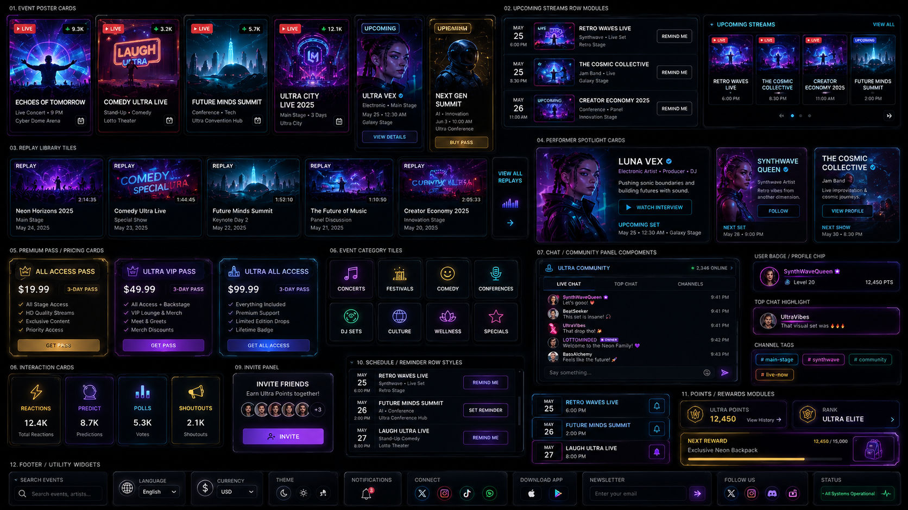

Twitch Live
LottoMinded Channel
Live stream video is connected to the LottoMinded Twitch page. If the player is blocked by Twitch or browser settings, open the channel directly.
Open TwitchLive Now
Started 00:12:45 ago
Watch live concerts, comedy, festivals, conferences, and special events inside a futuristic music-instrument event hub.
Twitch Live
Live stream video is connected to the LottoMinded Twitch page. If the player is blocked by Twitch or browser settings, open the channel directly.
Open TwitchSynthwave - Live Set
Jam Band - Live
Conference - Panel
Jazz-Off Detroit
M Rabinowitz performance
Jazz-Off Detroit
Live band feature
Bill Foster Interview
Jazz-Off Detroit archive
Performer Spotlight
Electronic artist, producer, and DJ pushing sonic boundaries and building futures with sound.
Watch Interview Upcoming Set - May 25 - 12:30 AM - Galaxy StageAll Access Pass
Ultra VIP Pass

Day 1 - Main Stage - 2:45:30

May Special - 1:18:45

Keynote Day 2 - 1:52:10
Global live signal · Earth online
Earn Ultra Points together.